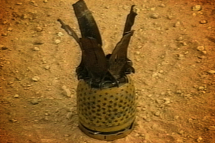
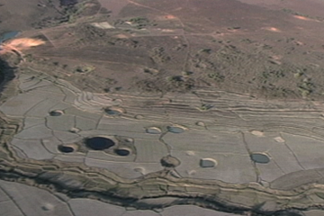

Munitions Used
Planes flew thousands of missions and dropped tons of munitions.
Play 2:30

Crater
Laos' scarred landscape is saturated with moon-like craters. Aerial views as shown here are extremely rare.
Play 2:30